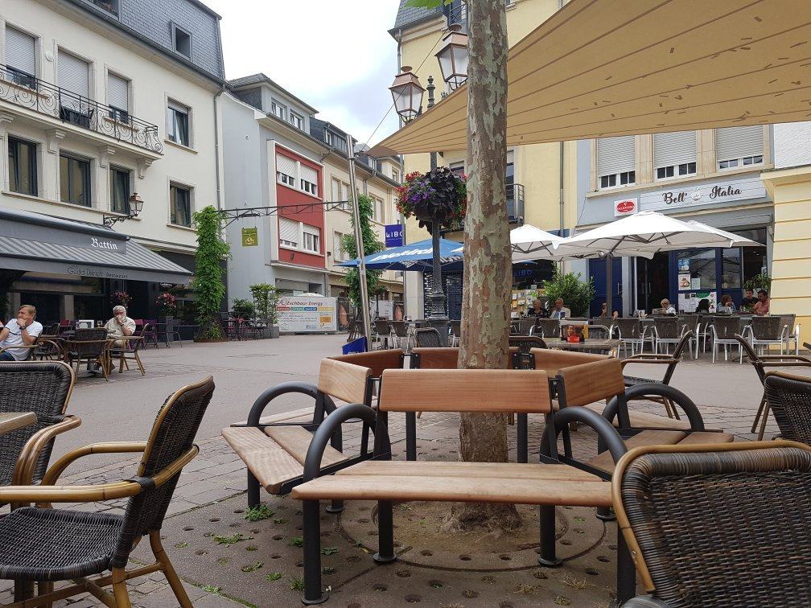
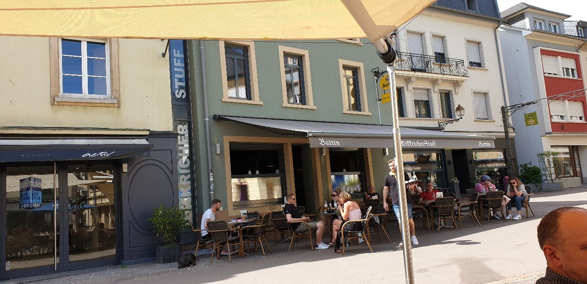
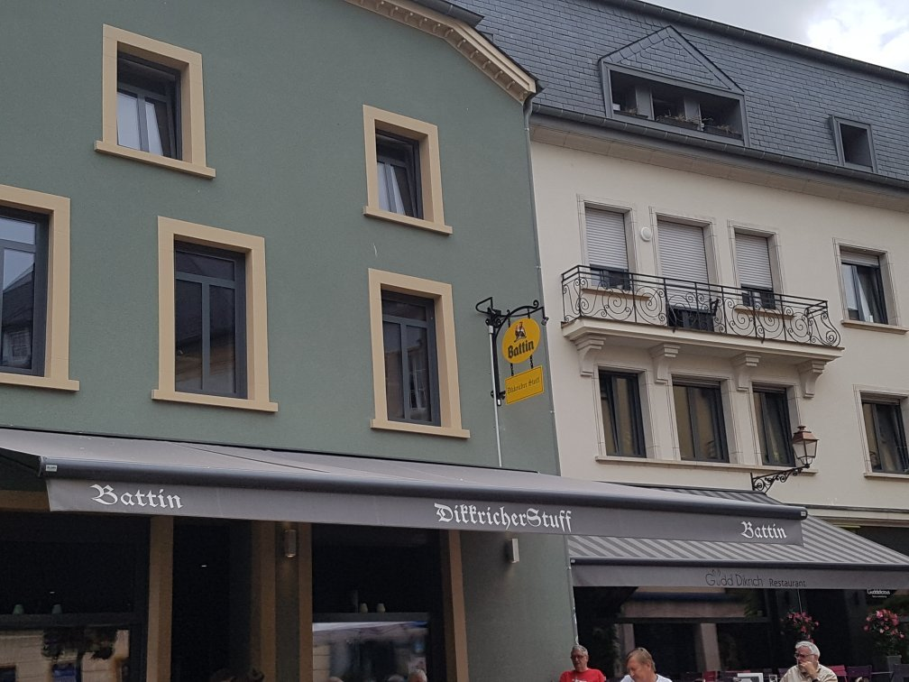
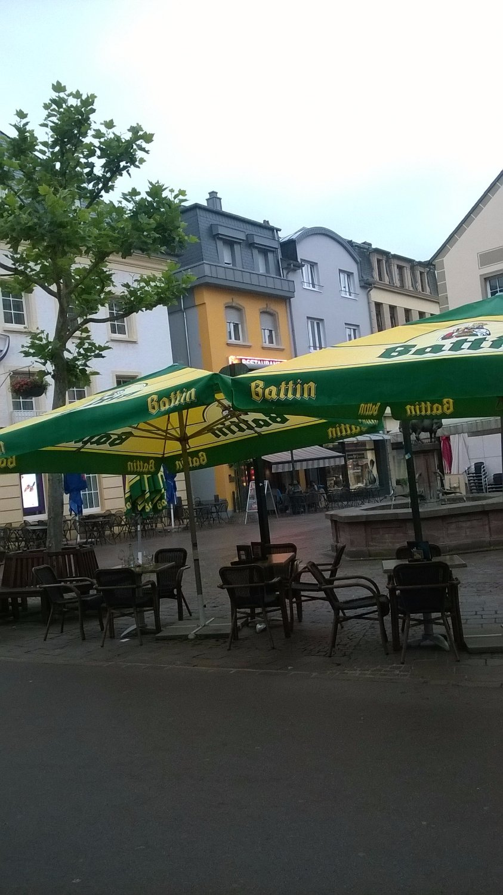
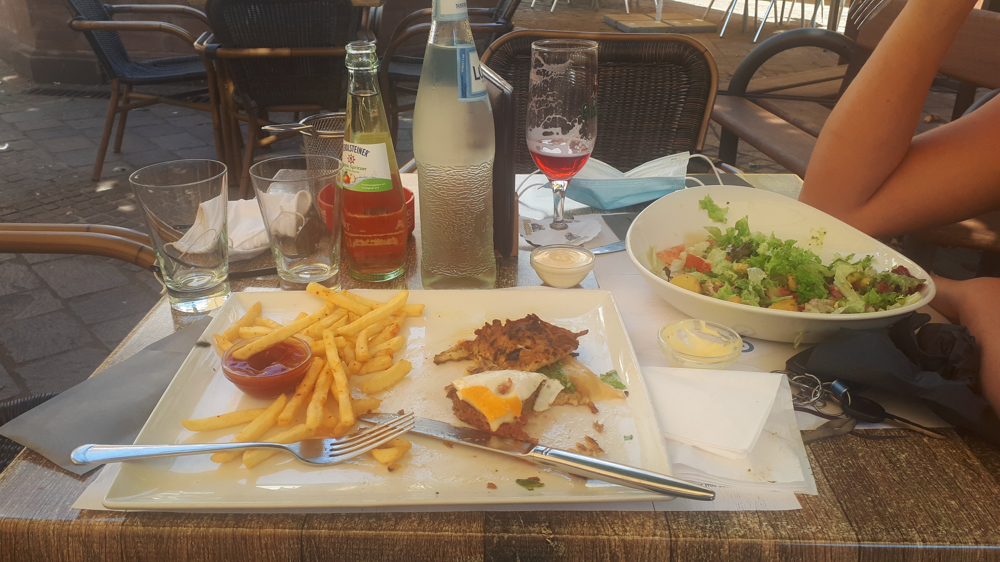

La brasserie du village sur la Place de la Libération : kniddelen généreux, burgers réputés et la plus belle terrasse de Dikrech, à l'ombre du platane.

Un pavé, une table, une histoire. Voici la Stuff telle qu'on la vit : la façade verte, la fontaine à l'âne, la terrasse au soleil.




Un café au soleil, une Battin bien fraîche, le platane pour ombrage et toute la place qui défile. C'est ici que Diekirch prend son temps.
Au centre de Diekirch, côté fontaine. Repérez la façade verte et le store à l'enseigne gothique.